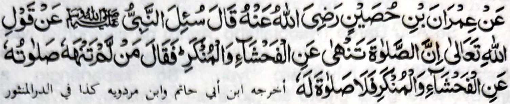
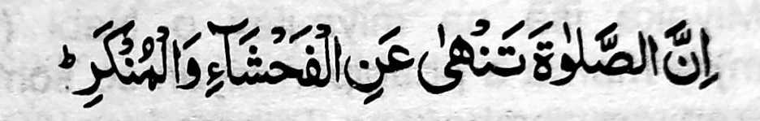

Hadith - VII

So 'Imran bin Hosain na pitharo iyan, "Iniza-an so Nabi (Sallallaho Alaihi Wasallam) pantag ko katharo o Allah

'Mata-an a so Sambayang na phakasapar ko pakasisingai ago so marata.' na pitharo iyan, 'Sa tao a di ron makasapar so Sambayang iyan ko pakasisingai ago so marata na da-a Sambayang iyan. "
Tanto a so Sambayang na titho a mala-i kipantag a simba asar ka phiya-piya-an, a aya rarad iyan na so kapakalidas ko pakasisingai. O di makowa so antap, na aden a khokorangan o gi-i kinggoIalanen ko Sambayang. Madakel a Hadith a lagida-i a ma-ana niyan. So Ibn Abbas (Radhiallaho 'Anho) na pitharo iyan, "So Sambayang na aden a bager iyan a karena niyan ko kitaliyadok ko manga dosa."
So Abul 'Aliah (Radhiallaho 'Anho) ko kaphagosaya niyan sangkanan a miya-aloy a Ayaat sa Qur'an na inisorat iyan, 'Telo a rokon o Sambayang: So Ikhlas, go so kalek ko Allah, ago so katatademi ron Rekaniyan. So Sambayang na kena ba Sambayang amay ka mada-on angkanan a telo So Ikhlas na ipethagompiya o 'amaal a mapiya, so kalek ko Allah na pekhabogao niyan so marata, ago so taden-tadem Rekaniyan na giyoto so Qur'an, a sekaniyan mambo na toro-an ko mapiya ago linding ko marata."
So ibn Abbas (Radhiallaho 'Anho) na piyanothol iyan a miyaka isa na so Nabi (Sallallaho 'Alaihi Wasallam) na pItharo iyan, "So Sambayang a di niyan misapar so piyakayaya ago so kapanalimbot na kena ba niyan maphakarani (so tao) ko Allah, ka pekha-awat iyan non baden."
So Ibn Masood (Radhiallaho 'Anho) na piyanothol iyan a miyaneg iyan so Nabi (Sallallaho 'Alaihi Wasallam) a gi-i niyan tharo-on, "So tao a di niyan bageren so Sambayang na aya mata-an na da makazambayang. So kabagera ko Sambayang na giyoto so kapalagoy ko pakasisingai ago so kapanalimbot."
So Abu Hurairah (Radhiallaho ’Anho) na piyanothol iyan, "Aden a tao a somiyong ko Nabi (Sallallaho 'Alaihi Wasallam) na piyanothol iyan a aden a mama, a aya ola-ola niyan na gi-i manambayang ko mababasa gawi-i ogaid na gi-i mamanekhao si-i ko kadaon-dao. Pitharo o Nabi (Sallallaho 'Alaihi Wasallam), "So Sambayang iyan na diden mathay na misapar iyan non bo angkanan a dosa." Giya-i kiyarayag iyan a so marata a ola-ola na khada amay ka so tao na tatapen niyan so Sambayang sa tolabos a so-a-so-at iyan ko Allah. Tanto a maregen ago malendo a galebek so kalalas o pizatimananan a marata a ola-ola. Ogaid, na lebi a malebod ago maga-an so kapho-on mamayandeg ko Sambayang phiya-piya a misabap ko madadalemon a barakah, na so manga rarata na mazatiman so kapekhada iran." Phangeni naken ko Allah a began ako Niyan sa bager a minggolalan aken so Sambayang phiya-piya.